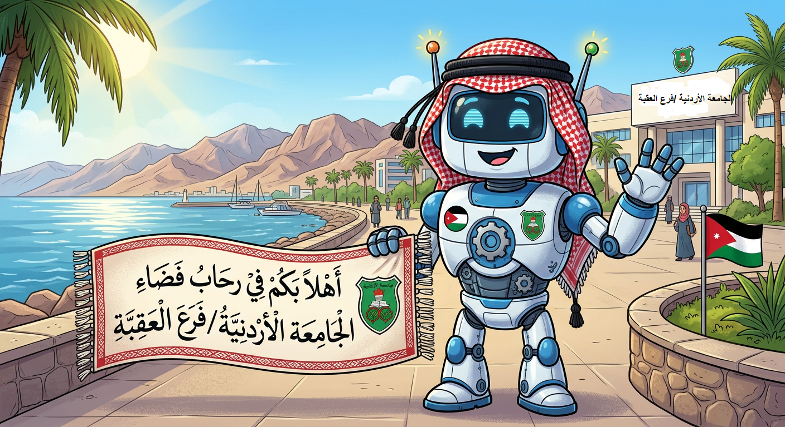

اسألني

مرحباً بك في المساعد الذكي لبرنامج الدبلوم العالي
أدخل كلمتك المفتاحية في مربع البحث أعلاه لاستعراض الأجوبة والتفاصيل مباشرة.
عذراً، لم يتم العثور على نتيجة مطابقة. جرب استخدام كلمات مفتاحية بسيطة أخرى.